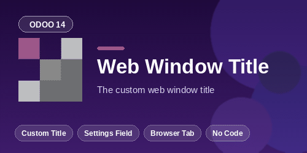
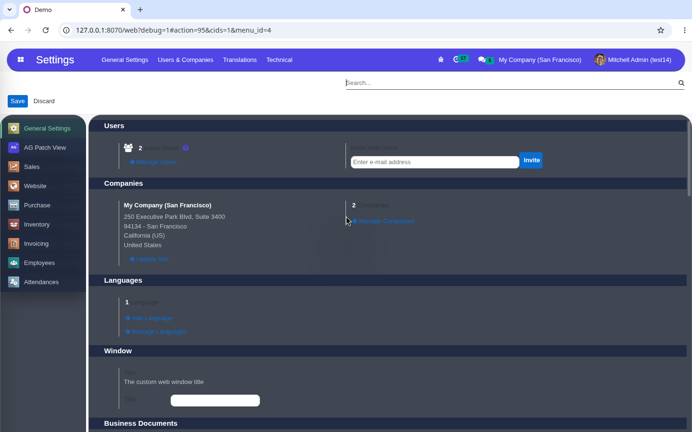
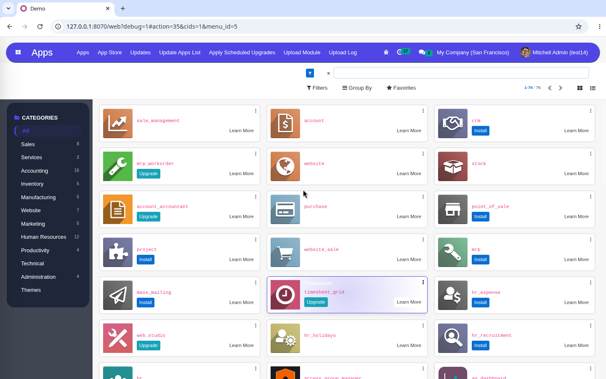
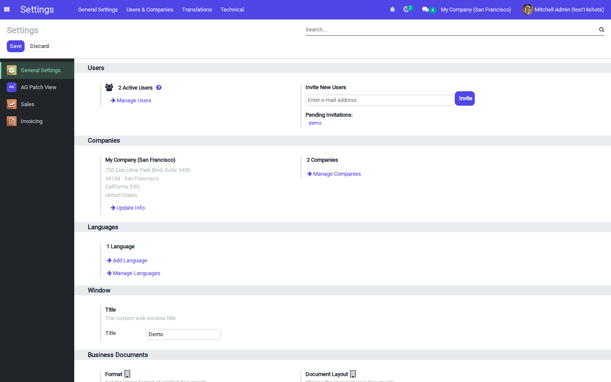

WT |
Web Window Title
Give your Odoo a name — the browser tab and the login page show your custom window title.
Odoo 14
LGPL-3
FREE
|

The custom web window title. One Title field in General Settings replaces the generic browser tab text with your own name — on the login page and on every backend tab. No code edits, no restart: type it, save it, reload the page.
web.base.title system parameter.1 setting field Title, in General Settings |
2 surfaces branded login page + web client tabs |
0 code edits needed settings only, save and reload |
The module stores your title in the web.base.title system parameter (Settings → General Settings → Window → Title). The login page (web.login) and the web client bootstrap (web.webclient_bootstrap) render that value as the page title, and the web client keeps it as the browser tab title.
Install the module and the demo value “Demo” is already active — open any page and the browser tab shows your custom title instead of the generic one. On the test database the tab reads exactly “Demo” on the Settings page and on the Apps page (verified in the screenshots below).
Change it any time: type a new title, click Save, reload the page. Clear the field and save to go back to the default.

Browser tab showing the custom title “Demo” on the Settings page (test database).Odoo 14.0 only. One title per database.
| Module | Status |
|---|---|
| Odoo 14.0 | Required — this build is for 14.0 only |
base_setup |
Required — the only dependency |
Browser tab showing the custom title “Demo” — Settings page (test database).

Browser tab showing the custom title “Demo” — Apps page (test database).
Settings — General Settings — Window section with the Title field (test database).| Situation | What you get |
|---|---|
| Several Odoo databases open in several browser tabs | 1 title per database — each tab is recognisable at a glance |
| Clients should see your brand, not a generic tab | Your own name on the login page and on every backend tab |
| You want to check that it works before configuring anything | Demo value “Demo” ships with the module and is active right after install |
custom_title_web folder into an addons path of your Odoo 14 installation.odoo-bin -d <db> -i custom_title_web --stop-after-init, or from Apps → Update Apps List → Install (the module is listed as Web Window Title).Where is the setting?
Settings → General Settings → Window section → Title field.
Does it need a server restart?
No — save the setting and reload the browser page.
Does it change the logo or the colours?
No — it only changes the browser tab / page title text.
Does it affect the login page?
Yes — the login page title uses the same web.base.title value.
What happens if the Title field is empty?
The default title is used.
Author: Ahmad Ghozali · License: LGPL-3. Version: 14.0.1.2.2.